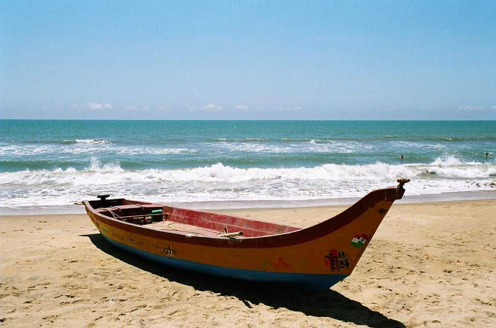

MUSEUM
Famous places in tamilnadu
Home
States

Places to visit in Chennai
Our top '8'
Beaches
Museum
Monuments
Wildlife
Worship
Shoping
Entertainment
St, George's fort
Annai Velankanni Shrine
Ripon Building
Freemansons Hall
Kapaleeshwar Temple